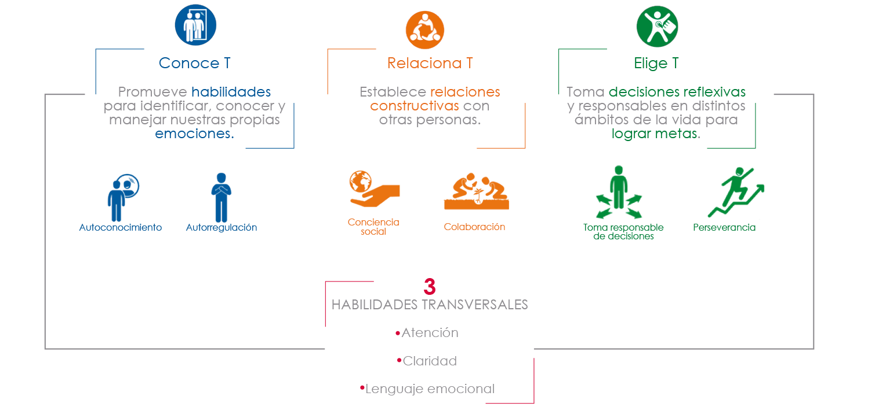

Construye T
Beneficiarios
Construye T está dirigido a estudiantes, docentes y directivos de escuelas públicas de educación media superior.
Las habilidades socioemocionales en el modelo educativo
Por primera vez en México la educación socioemocional se ha incorporado como parte integral del currículo formal de la educación obligatoria. En el Modelo Educativo se incluye el ámbito de “las habilidades socioemocionales y proyecto de vida” como parte esencial del perfil de egreso del estudiante de educación media superior. En esta medida, Construye T se ha rediseñado para ofrecer las herramientas pedagógicas necesarias que te permitirán implementar el programa en tu escuela.
Habilidades socioemocionales (HSE)
¿Qué son?
Son herramientas que permiten a las personas entender y regular sus emociones, sentir y mostrar empatía por los demás, establecer y desarrollar relaciones positivas, tomar decisiones responsables, y definir y alcanzar metas personales.
Beneficios
Existe evidencia de que el aprendizaje de HSE contribuye a:
Lograr un mejor desempeño académico
Genera un clima escolar positivo
Lograr trayectorias laborales exitosas
Prevenir situaciones de riesgo en las y los jóvenes:
embarazo adolecente, abandono escolar, drogadicción, violencia, entre otros.
Las habilidades que promueve Construye T
Con base en los resultados de investigación de los campos de la psicología, la educación, la economía y las neurociencias, Construye T ha seleccionado seis habilidades socioemocionales sobre las que existe evidencia que son maleables y que están relacionadas con resultados de éxito para las personas.

Cada uno de los aspectos se trabajará a partir del desarrollo de habilidades socioemocionales específicas: autoconocimiento, autorregulación, conciencia social, colaboración, toma de decisiones y perseverancia. Y de tres herramientas que se trabajan transversalmente: atención, claridad y lenguaje emocional.
Cada una de las habilidades socioemocionales antecede y acompaña a la siguiente, en la búsqueda de acciones y decisiones que promueven el bienestar personal y de su entorno. Se complementan entre sí, de manera que todas se construirán y fortalecerán simultáneamente.
Las habilidades socioemocionales se trabajan a través de 12 lecciones diseñadas para el análisis, la práctica y el uso de conceptos clave específicos de cada una. El trabajo de una habilidad socioemocional tiene una duración de un semestre completo: 12 semanas.
Cada lección está compuesta por seis variaciones. Cada semana, los estudiantes trabajarán en sus horas clase, las seis variaciones de una lección.
Cada variación se trabajará en el transcurso de su clase, por un profesor específico, con una duración de 20 minutos.
Cada variación para el estudiante tiene una variación para el profesor que servirá de guía para la implementación. Los docentes abordarán los mismos temas en cada lección, pero desde diferentes perspectivas, de manera que las actividades de aprendizaje de cada lección serán diferentes y complementarias permitiendo que los estudiantes profundicen en cada habilidad.